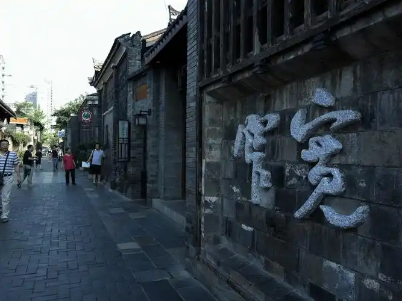
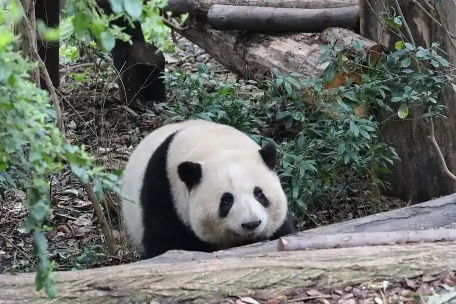
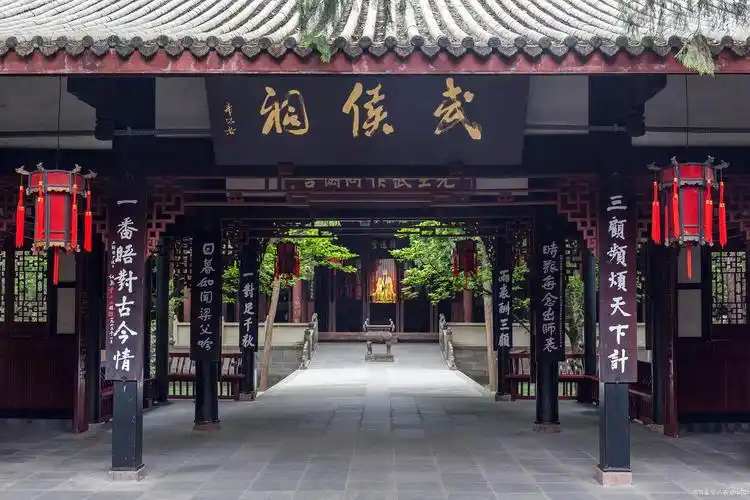
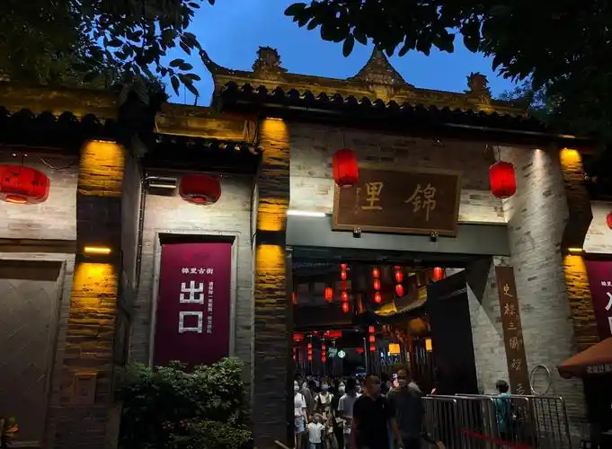
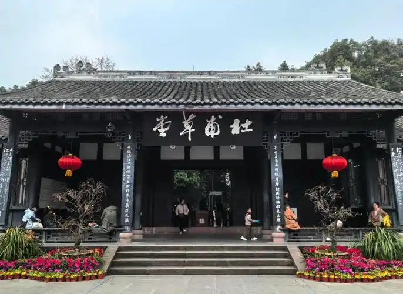
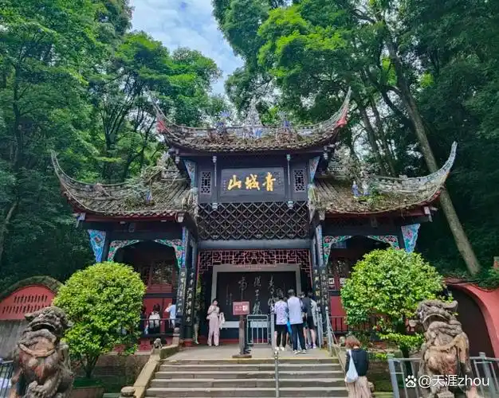

全息景点图鉴
[ SYSTEM_SCAN : CHENGDU_LANDMARKS ]

宽窄巷子
由宽巷子、窄巷子和井巷子平行排列组成，是体验成都慢生活的绝佳坐标。

大熊猫繁育研究基地
这里是“赛博地球”上最治愈的生物数据观测点，观察国宝的野外生活。

武侯祠
中国唯一的一座君臣合祀祠庙，三国历史数据在此永久刻录。

锦里古街
古老与未来碰撞的虚拟现实区，夜晚的红灯笼与霓虹交织。

杜甫草堂
保存着海量的“盛唐诗歌数据”，与诗圣建立精神链接的静音节点。

青城山
高浓度的负氧离子构成了天然的“生态防火墙”，屏蔽城市的喧嚣。